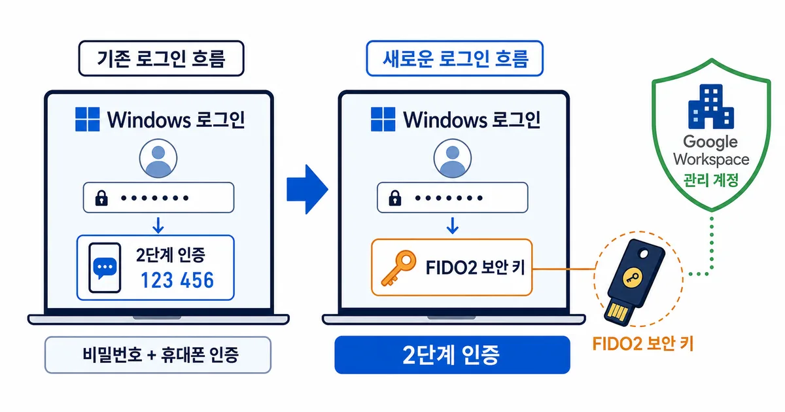
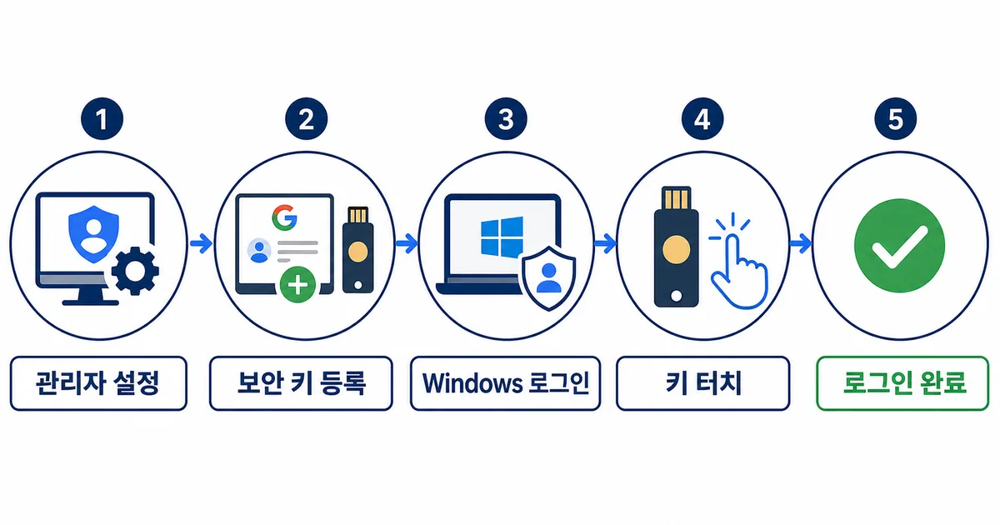
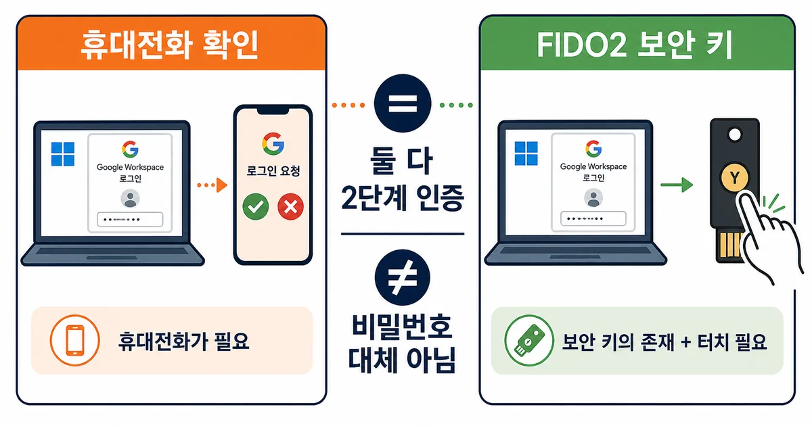

2026. 7. 20 (월) · 약 9분
회사 Windows PC에서 로그인할 때마다 휴대전화 알림을 확인하는 흐름은 익숙하지만, 현장이나 공유 공간에서는 그 한 단계가 자주 막힙니다. Google은 GCPW(Google Credential Provider for Windows)에서 FIDO2 호환 물리 보안 키를 두 번째 인증 수단으로 지원하기 시작했습니다. 이제 관리형 Google 계정으로 Windows에 로그인할 때 보안 키를 사용할 수 있고, 가까이 있는 블루투스 휴대전화의 패스키도 두 번째 단계로 쓸 수 있습니다. 다만 이 변화는 Windows 비밀번호를 보안 키 하나로 완전히 교체한다는 뜻은 아닙니다.

오늘의 핵심뉴스
심층 분석 · Google Workspace Updates · 2026. 7. 14
Google Credential Provider for Windows, FIDO2 물리 보안 키를 두 번째 인증 수단으로 지원
Google은 GCPW에서 FIDO2 호환 물리 보안 키와 근처 블루투스 휴대전화의 패스키를 Windows 로그인용 두 번째 인증 수단으로 지원하기 시작했다. 배포는 7월 13일부터 최대 15일간 점진적으로 진행된다.
Windows 로그인에서 정확히 무엇이 바뀌었나
GCPW는 Windows 10 또는 11 기기에서 관리형 Google 계정으로 로그인하게 하는 구성 요소다. Google의 이번 업데이트는 그 로그인 과정의 두 번째 인증에 FIDO2 호환 물리 보안 키를 추가한다. 관리자는 하드웨어 키를 쓰는 2단계 인증을 강제할 수 있고, 사용자는 근처 블루투스 휴대전화에 있는 패스키도 두 번째 단계에서 사용할 수 있다. 기능 노출은 7월 13일부터 최대 15일간 점진적으로 이뤄진다.

보안 키가 하는 일: 비밀번호 대체와 구분하기
여기서 FIDO2 키는 Windows 로그인 전체를 단독으로 대체한다는 발표가 아니다. Google 공지는 이를 두 번째 인증 수단이라고 명시한다. 즉 관리형 Google 계정의 기존 로그인 흐름 뒤에서 ‘내가 실제 키를 갖고 있다’는 확인을 더하는 역할이다. Google 계정 도움말도 보안 키를 2단계 인증에 사용할 수 있다고 안내하며, 키에 패스키를 만들 때와 두 번째 단계로 쓸 때의 동작이 다를 수 있음을 설명한다.

도입 전에 확인할 정책과 등록 조건
| 확인 항목 | 먼저 볼 내용 | 실무에서 남길 기록 |
|---|---|---|
| 적용 범위 | GCPW가 설치된 Windows 10·11과 관리형 Google 계정인지 확인 | 시험 기기와 시험 계정 |
| 2단계 인증 | 관리자가 해당 사용자에게 2단계 인증과 키 사용을 어떻게 강제하는지 확인 | 정책 이름과 적용 그룹 |
| 키 등록 | 사용자 Google 계정에 호환 키를 미리 등록 | 키 소유자와 예비 키 |
| 로그인 단계 | 최초·재인증의 Google 화면인지 일반 Windows 로그인인지 구분 | 화면 종류와 오류 문구 |
| 복구 | 키 분실 시 계정 복구와 대체 인증 수단을 확인 | 지원 담당자와 절차 |
Google은 관리자가 2단계 인증 강제를 확인하라고 안내한다. 반면 사용자에게 이 기능을 켜는 별도의 설정은 없다고 설명한다. 따라서 ‘사용자 PC에서 메뉴 하나를 켠다’는 방식으로 접근하기보다 조직 정책과 계정의 키 등록을 먼저 맞춰야 한다. Google 계정 도움말에 따르면 새로 추가한 키는 로그인에 쓰기까지 대기 시간이 필요할 수 있으므로, 배포 당일 전사 전환보다 시험 계정 검증이 안전하다.
키 선택지가 안 보이면 로그인 단계부터 확인하기
7월 13일부터 최대 15일이라는 일정은 당시의 배포 안내다. 지금 키가 보이지 않는 이유를 그 일정만으로 설명하지 않는다. Google Workspace 로그인 도움말에 따르면 최초 GCPW 로그인에는 인터넷 연결이 필요하며, Google 계정 인증과 화면에 요청되는 2단계 인증을 진행한다. 이미 로그인한 뒤의 일반 Windows 로그인은 기존 프로필에서 비밀번호로 진행할 수 있다.
| 지금 보이는 화면 | 다음 확인 |
|---|---|
| 일반 Windows 프로필 로그인 | 키 요청이 없다는 사실만으로 등록 실패라고 판단하지 않는다. |
| 최초 Google 로그인 또는 보안 이벤트 뒤 재인증 | 화면의 인증 요청을 확인하고, 키 선택이 없으면 관리자에게 적용 정책과 계정 등록을 확인한다. |
| 새로 등록한 키가 목록에만 보임 | Google 계정 도움말은 사용까지 최대 7일 대기가 필요할 수 있다고 안내한다. 예비 수단을 유지한다. |
세션 만료, 의심스러운 활동, Google 비밀번호 변경 뒤에는 Google 로그인 화면으로 재인증할 수 있다. 화면 종류·확인 시각·오류 문구를 남기면 관리자가 정책 문제와 로그인 단계 차이를 구분하기 쉽다. 이 안내는 공식 문헌 대조이며 실제 조직의 Windows 로그인이나 키 분실 시험을 수행한 결과는 아니다. 정책을 끄거나 기존 키를 삭제해 확인하지 말고, 복구 수단이 확보된 시험 계정에서 담당자와 검증한다.
실제 적용 흐름은 작게 시작하는 편이 낫다
먼저 GCPW가 설치된 테스트 PC와 시험용 관리 계정을 정한다. 다음으로 조직의 2단계 인증 정책이 그 계정에 적용되는지 확인하고, 주 키와 예비 키를 계정에 등록한다. 이후 Windows에서 Google 로그인 화면을 열어 키를 연결하거나 터치했을 때 두 번째 인증으로 완료되는지 확인한다. 정상 신호는 단순히 키가 등록 목록에 보이는 것이 아니라, 실제 Windows 로그인에서 키 인증을 끝내고 해당 관리 계정 세션으로 들어가는 것이다.
- 시험 계정에 주 키와 예비 키를 각각 등록한다.
- GCPW가 설치된 Windows 10 또는 11에서 관리형 계정 로그인을 실행한다.
- 2단계 인증 시 보안 키와 근처 휴대전화 패스키 옵션이 정책대로 보이는지 확인한다.
- 키를 뽑거나 분실했다고 가정해 예비 수단과 지원 절차로 복구되는지 기록한다.
- 키 선택지가 없으면 일반 Windows 로그인인지 Google 재인증 화면인지 먼저 구분한다.
물리 키를 쓰면 줄어드는 것과 남는 한계
FIDO2는 사이트와 인증기 사이의 공개키 기반 확인을 사용하므로, 단순 인증 코드보다 피싱에 강한 방식으로 널리 쓰인다. 하지만 물리 키가 있다는 사실만으로 모든 위험이 사라지지는 않는다. 키를 잃어버릴 수 있고, 조직 정책이 너무 엄격하면 현장 지원이 막힐 수 있다. 키의 호환성, 예비 키 보관, 분실 신고와 계정 복구 권한은 도입 전부터 정해야 한다. 또한 이번 발표는 GCPW 로그인에서의 두 번째 인증 지원이므로, 다른 Windows 로그인 방식이나 오프라인 사용 경험까지 같다고 추측하면 안 된다.
오늘 확인할 체크리스트
- 우리 조직이 GCPW와 관리형 Google 계정으로 Windows에 로그인하는지 확인한다.
- 2단계 인증 정책에서 보안 키 사용과 대상 그룹을 확인한다.
- FIDO2 호환 키를 시험 계정과 예비 수단에 등록한다.
- 실제 Windows 로그인에서 키 인증이 완료되는지 확인한다.
- 키 분실·교체 시 복구 절차와 담당자를 문서화한다.
- 7월 배포 대기 대신 현재 로그인 단계와 계정 등록 상태를 기록한다.
참고한 자료
이번 변화의 핵심은 Windows 로그인이라는 마지막 관문에 물리 키 선택지를 연결한 데 있습니다. 도입은 키를 나눠 주는 일보다 정책, 등록, 분실 대응, 실제 로그인 확인을 함께 맞추는 일에 가깝습니다. 조직의 2단계 인증 기준과 예비 복구 수단을 먼저 점검하면 새 옵션을 필요한 사람부터 안전하게 적용할 수 있습니다. 관리자 콘솔의 2단계 인증 정책과 대상 사용자를 확인한 뒤, 시험 계정 하나에 예비 키까지 등록해 GCPW 로그인과 분실 시 복구 흐름을 검증하세요.